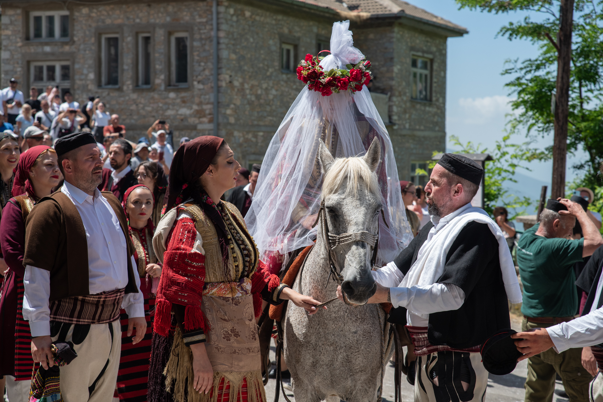

MCDNA / Macedonian Visual Language
Galichnik - Wedding arrival

Contemporary ceremony photographed in 2023. The photograph shows dress in use within a gathering, rather than a museum display.
Look closely
Compare the tall pale veil with the dark garments around it; study how red accents recur across the group.
Documentation
The photograph documents this event, not every historical wedding practice.
Photograph: Biljana Jurukovski. Photo date recorded by source: 2023-07-16.
Source image and metadata · CC BY-SA 4.0

Image retained at its supplied framing; some copies are scaled by the source service. No additional crop. Source captions' broader historical claims have not been adopted without independent verification.
Related: Regional dress and embroidery · Pattern study method · Galichnik image gallery